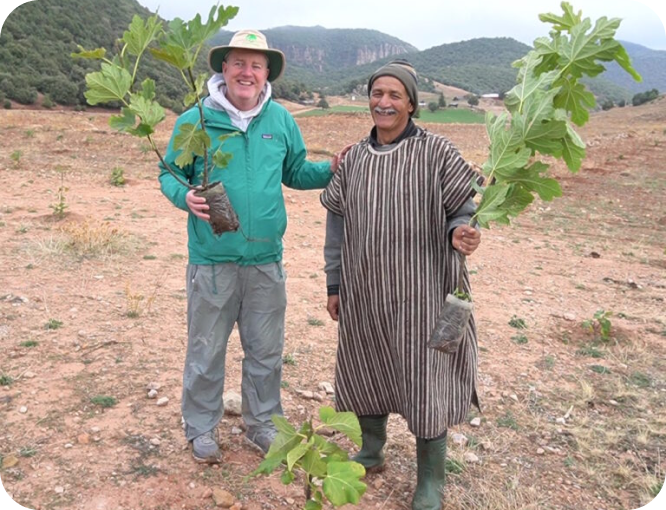
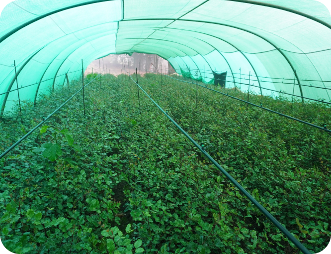
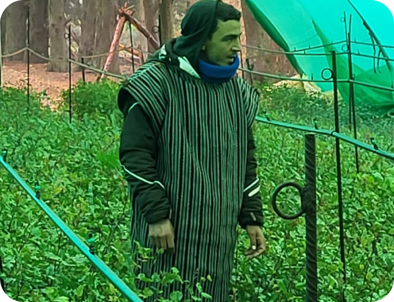
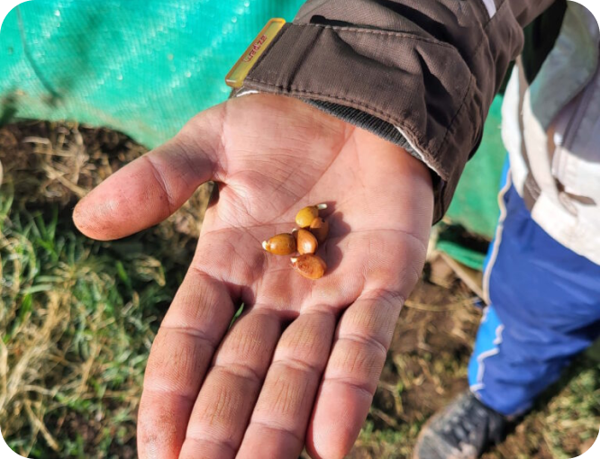
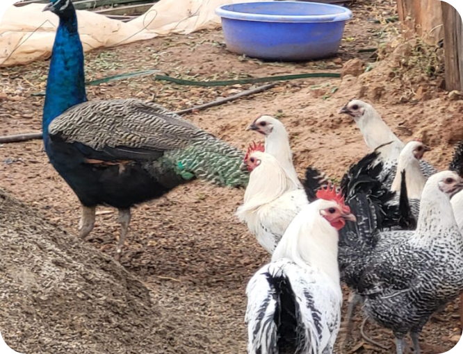
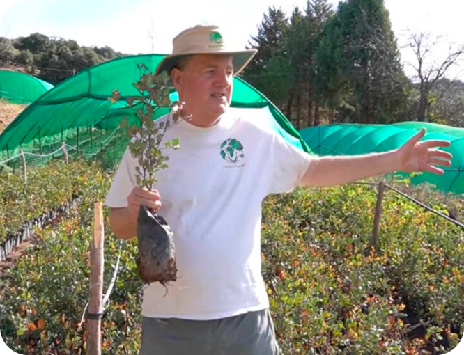

Everywhere we travel we see underlying economic forces driving unsustainable behavior. Alternatively, when
unsustainable behavior begins to deliver diminishing returns it’s an opportunity to offer economically
viable alternatives that also provide ecological benefits. Decision windows open and close quickly, so the
right team with the right ideas and tools needs to be ready.
Case in point: there are thousands
of smallholder farmers (i.e. less than 10 hectares) in Morocco who have been relying on mono-cropping for
decades. Like in most areas of the world, mono-cropping can be water, fertilizer, and pesticide intensive,
mostly to make up for poor soil quality. The focus is on immediate yield, not soil health or the crop’s
nutrient density.
In Morocco, farmers allocate large portions of their land to winter wheat
(which has been doing well), and other large portions to summer corn. Sadly, the corn yields have been
dropping steadily in recent years due to excessive heat and drought. Yet another casualty of climate
change.
However, our in-country partners, the High Atlas Foundation (HAF), are in close contact
with many Moroccan farmers and stand ready to offer an alternative. Such is the story of Mohammed’s farm,
located outside the town of Khenifra in the Middle Atlas Mountains. Mohammed has worked on a 20-acre farm
his entire life. Like most of his neighbors he mostly planted mono-crops in the winter and summer, along
with keeping a small vegetable garden and a few energetic chickens (who are guarded by peacocks!). Like his
neighbors, his yields for summer corn are down about 50% from five years ago.

Planting fig trees in Morocco
Selling family farms in Morocco is quite rare, almost unthinkable, but lost income is lost income and
changes needed to be made to avoid such a crisis.
The Right Trees, Planted in the Right Way, at the Right Time, are an Economically Viable Alternative
ForestPlanet has channeled funds in support of HAF programs for years. HAF has established nine
amazing tree nurseries around the country, focusing mainly on nutrient-dense fruiting trees that can
generate reliable incomes for decades. Each nursery has room for 200 – 300 thousand seedlings, and species
include fig, pomegranate, olive, carob, cashew, and Argan.

This nursery in Khenifra, Morocco nursery holds 100,000+ healthy tree seedlings that are ready to be
distributed.
HAF team members are recruited from the areas surrounding the nurseries, and as such have personal
relationships with most of the local farmers. Like most places, Moroccan farmers are much more likely to
listen to and respect one of their own, rather than outsiders.
Meet Ahmed, an 11-year HAF
veteran who was raised on his own family farm in the Khenifra area. As such he has a lot of credibility
with his neighbors. He speaks some Arabic, but mainly speaks Tamazight, an official language of Morocco and Algeria.

Caretaker Ahmed, getting it done!
Ahmed and HAF proposed a bold shift to farmer Mohammed: carve out ~25% of his land dedicated to the corn
crop and plant 1,000 healthy fig tree seedlings instead. While the long-term benefits are known, there are
short term risks that farmer Mohammed must manage. Fig trees typically take three to five years to start
producing fruit. They need to be ~10 years old before they reach maximum production levels. While they are
maturing, they require water, care, and attention.

Ahmed’s Hands deliver Hope
Thanks to Ahmed’s persuasive efforts, the first 1,000 fig tree seedlings were delivered in December 2022,
when they were already ~12 months old. We’ve seen this time and again, and all over the world, that healthy
seedlings produced by well-run nurseries have very high (i.e. 95% or higher) survival rates. This fact helps
reduce farmer Mohammed’s financial risk.
Why fig trees? They produce highly nutritious fruit for
many decades, possibly hundreds of years. At current market prices, each tree can produce ~$100 per year in
income. This is good money for farmer Mohammed, and more than makes up the losses due to lower corn
yields.
And of course, like all other trees, this species enriches the soil, channels rainwater
to the aquifers, cools the micro-climate, and enhances biodiversity.
And the chickens love the
nutrient-dense addition to their feed!

Peacocks guarding the well-fed chickens
Just to summarize this success story:
Farmers can continue to earn a good living and stay on
their land – THE WORLD ALREADY HAS TOO MANY CLIMATE REFUGEES
The trees are less water-intensive in the long run, and need far less fertilizer and pesticides… or none
at all
The farm produces a much more nutrient-dense crop
The trees help recharge ground water
levels by channeling moisture during the rainy seasons
The planet is just that much cooler
…ALL THIS FOR AN INCREDIBLY EFFICIENT 15 CENTS PER TREE.
Thanks to Ahmed’s good efforts, and the progress of the first 1,000 trees, farmer Mohammed now plans to
add more trees to his farm in the coming years. We were happy to help deliver an additional 200 fig trees
during our visit in December 2023. Like any good portfolio manager, the goal is to diversify his
investments by planting a variety of tree species. By late 2024 he hopes to add olive and Argan trees to
the mix.

Much has been done, much more to do.
The Big Picture
There are an estimated 600 million smallholder farmers working on less than 5 acres of land, according to
the Food and Agriculture Organization (FAO). They are an invaluable segment of the global agricultural
industry. Most of these farming families experience financial insecurity, like our friend Mohammed.
Allocating land to fruiting trees isn’t the only way to increase a farm’s income, but it’s a great start
*and* one that helps cool the planet at the same time.
Your support of ForestPlanet channels resources to skilled front-line workers like Ahmed and their efficient nurseries. There are
thousands of everyday heroes like Ahmed all over the world. Our mission is to make sure they have what
they need to succeed.